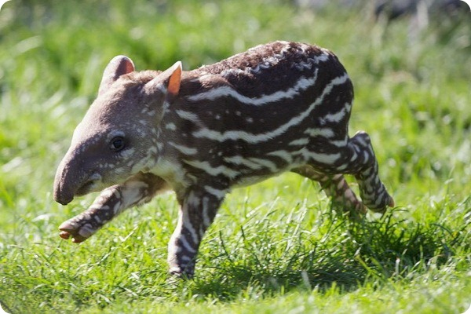

Зовнішній вигляд тапірів
Тапіри мають масивне тіло, короткі міцні ноги та округлу спину. Найхарактерніша риса — гнучкий хобот, який використовується для захоплення їжі. Забарвлення варіюється: малайський тапір має чорно-білий окрас, а американські — темно-коричневі або сірі. Маленькі тапіри народжуються зі смугастим камуфляжним візерунком.
Особливості будови тапірів:
- Гнучкий хобот — подовжена верхня губа та ніс, використовується як хватальний орган.
- Копитні кінцівки: на передніх ногах — 4 пальці, на задніх — 3 пальці.
- Великі щелепи з потужними зубами для пережовування волокнистої рослинності.
- Невеликі круглі вуха, добре пристосовані до лісового середовища.
- Маленькі очі, з добре розвиненим нічним зором.
- Товста шкіра для захисту в лісовій гущавині та від укусів хижаків.
